Introduction to the gait data for 39 boys
Contents
- Setting up the data for analysis
- Estimating a functional data object
- Some exploratory plots of the curves and data
- More informative plots of the curves
- Principal components analysis before registration
- Registration of the curves
- Post-registration principal components analysis of amplitude variation
- Post-registration principal components analysis of phase variation
- Phase-plane plots for registered mean
- Display the variance and covariance functions
- Canonical correlation of hip and knee angle
The Motion Analysis Laboratory at Children's Hospital, San Diego, CA, collected these data, which consist of the angles formed by the hip and knee of each of 39 children over each child's gait cycle. The data analyzed here have been the subject of many papers, but our reference is Oshen, et al (1989) Gait analysis and the bootstrap. Annals of Statistics, 17, 1419-1440.
Time is measured in terms of the proportion of the individual gait cycle, which we have translated into values of $t$ in $[0,1]$. The cycle begins when the heel of the limb under observation strikes the ground. Both sets of functions are treated as being periodic.
The gait cycle as displayed in these data has four phases:
- At the heel strike, the other foot is still in contact with the floor, and the first phase lasts until the other foot leaves the floor, which occurs at about 19% of the gait cycle. The weight of the body is transferred to the side being plotted.
- The other foot leaves the floor moves from behind the limb being plotted to the point where the other heel strikes the floor. During this phase the plotted leg is bearing all of the weight of the body. The knee angle is near zero to minimize muscle loading during this time of maximal load. The hip angle continues to decrease, however, as the leg continues to move to the rear. This phase lasts about 31% of the gait cycle, so that for about 62% of the cycle the body is being supported by only one leg.
- The other heel strikes the floor, but the foot on the plotted side is still in contact with the floor. Since gait is nearly bilaterally symmetric, this point is roughly at the mid-point of the cycle. This phase lasts until the plotted foot leaves the floor at about the 68% point of the cycle.
- When the plotted foot leaves the floor, all the weight is transferred to the other side, and this phases lasts until the plotted heel again strikes the floor.
There are many interesting questions concerning these data.
- We want to consider registering the data. The starting point for each record is the time of the heel strike, but this is an interaction with the environment that may a complex relationship to the dynamics for heel and knee angle, as well as to their interaction.
- What are the relative importances of amplitude and phase variation in these gait cycles? If we want to diagnose gait problems, which of should we focus on?
- Where does most of the energy come from that defines gait? What is the relative importance of the hip and the knee?
- Heel strikes and toe lifts mark boundaries in the gait cycle, but can we see these plus any other markers directly in the hip and knee angles?
- To some extend knee angle must be dependent on hip angle, since one suspects that the swing of the lower leg from back to front in preparation for the next heel strike is partially propelled by hip motion.
Setting up the data for analysis
fid = fopen('hip.dat','rt'); hip = reshape(fscanf(fid,'%f'), [20,39]); fid = fopen('knee.dat','rt'); knee = reshape(fscanf(fid,'%f'), [20,39]);
The hip and knee angles were observed at 20 equally spaced time points. Here we center them within the time interval, but the original report was not clear as to whether the first point was at the beginning of the interval. For our purposes, it does not matter which where we assign the first value, and we will see that the data require substantial registration in any case.
gaittime = linspace(0.025, 0.975, 20)';
The angle values are in degrees and are integers.
gaitarray = zeros(20, 39, 2); gaitarray(:,:,1) = hip; gaitarray(:,:,2) = knee;
Estimating a functional data object
We use a Fourier basis, and for symmetry reasons the number of basis functions must be odd. Hence this basis actually has more basis functions than there are observations per record. This does not pose a problem for the computation, however.
gaitbasis = create_fourier_basis([0,1], 21);
We will apply a small amount of penalty to the roughness of the data. There is a certain amount of error due to both measurement and the discretization of the angles, and angles are consequently only accurate to within about three degrees.
Since the data are periodic and even roughly sinusoidal, it is reasonable to penalize the total harmonic acceleration. Here we set up the linear differential operator that annihilates a shifted sinusoid with period one.
harmaccelLfd = harmaccel(gaitbasis);
Now we set up functional parameter object to define amount of smoothing. We need to have smooth and stable estimates of the second derivatives of these curves, and our choice of 1e-7 as thesmoothing parameter value was settled on by looking at the quality of the fit using plotfit_fd, and by inspecting the second derivative curves.
gaitfdPar = fdPar(gaitbasis, harmaccelLfd, 1e-7); % create the fd object gaitfd = smooth_basis(gaittime, gaitarray, gaitfdPar); % set up labels for dimensions of the data gaitfd_fdnames{1} = 'Proportion of gait cycle'; gaitfd_fdnames{2} = 'Boys'; AngleCell = cell(1,2); AngleCell{1} = 'Angle (deg.)'; AngleCell{2} = ['Hip ';'Knee']; gaitfd_fdnames{3} = AngleCell; gaitfd = putnames(gaitfd, gaitfd_fdnames);
Some exploratory plots of the curves and data
Check the fit by plotting each pair of curves along with the data pooints. This plot is not shown because it requires interactivity.
% plotfit_fd(gaitarray, gaittime, gaitfd)
It must be admitted that there is some indication of non-periodicity when one compares the fits to the initial and final points. It is not large, however, and it seems worth proceeding as if the data are actually periodic.
% Now plot all the curves in a two-panel display. plot(gaitfd) % The following commands will show the residuals for each curve, but % is not shown here because it requires interactivity.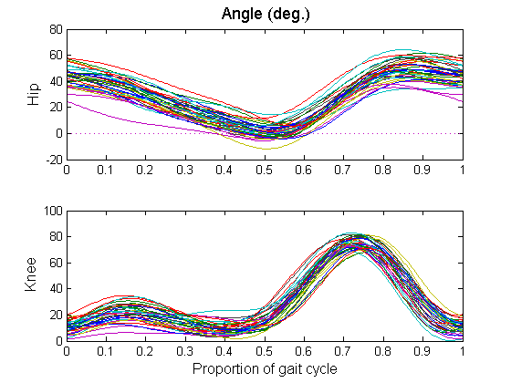
More informative plots of the curves
Now plot all the curves in a two-panel display. These commands place vertical dashed lines at the boundaries of the four phases.
nfine = 101; gaitfinetime = linspace(0,1,nfine)'; gaitsmootharray = eval_fd(gaitfinetime, gaitfd); % plot hip angle subplot(2,1,1) phdl = plot(gaitfinetime, gaitsmootharray(:,:,1), '-', [0,1], [0,0], 'r:'); set(phdl, 'LineWidth', 1) hold on phdl = plot([0.19,0.19], [-20,80], 'b--', ... [0.50,0.50,],[-20,80], 'b--', ... [0.69,0.69], [-20,80], 'b--'); set(phdl, 'LineWidth', 1) hold on axis([0,1,-20,80]) ylabel('\fontsize{13} Hip angle') % plot knee angle subplot(2,1,2) phdl = plot(gaitfinetime, gaitsmootharray(:,:,2), '-', [0,1], [0,0], 'r:'); set(phdl, 'LineWidth', 1) hold on phdl = plot([0.19,0.19], [0,100], 'b--', ... [0.50,0.50,],[0,100], 'b--', ... [0.69,0.69], [0,100], 'b--'); set(phdl, 'LineWidth', 1) hold on axis([0,1,0,100]) xlabel('\fontsize{13} Proportion of gait cycle') ylabel('\fontsize{13} Knee angle')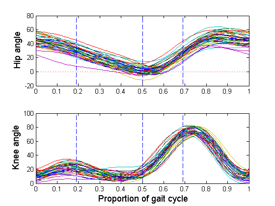
We see that:
- The hip angle begins to decrease linearly from its maximum angle, while the knee angle increases to a local maximum from near zero.
- The hip angle continues its linear decrease to its minimum near zero, while the knee angle first decreases to near zero, and then begins to increase. This is the unilateral load bearing phase.
- The hip angle switches to a phase of linear increase, while the knee angle increases sharply to its maximum value as the leg prepares to leave the floor.
- The hip angle increases and then levels off as the foot is being moved forward for the next heel strike, while the knee angle decreases rapidly to zero as the leg extends.
% Plot the residuals, sorting cases by residual sum of squares. % The lack of total periodicity shows up in the larger residuals at the % beginning and end of each record. This plot is omitted here because it % requires interactivity. % residual = 1; % sortwrd = 1; % plotfit_fd(gaitarray, gaittime, gaitfd, residual, sortwrd) % Plot of mean gait cycle and the gail cycle for the first boy % with every fourth point labelled. gaitmeanfd = mean(gaitfd); gaitvec = squeeze(eval_fd(gaitfd(1,:), gaittime)); gaitmeanvec = squeeze(eval_fd(gaitmeanfd, gaittime)); gaitlet = ['A', 'B', 'C', 'D', 'E']; gaitind = [1,5,9,13,17]; subplot(1,1,1) phdl = plot(gaitvec(:,1), gaitvec(:,2), 'bo-', ... gaitvec([20,1],1), gaitvec([20,1],2), 'b-', ... gaitmeanvec(:,1), gaitmeanvec(:,2), 'ro--', ... gaitmeanvec([20,1],1), gaitmeanvec([20,1],2), 'r--'); set(phdl, 'LineWidth', 2) xlabel('\fontsize{13} Hip Angle') ylabel('\fontsize{13} Knee Angle') axis([0,50,0,80]) hold on for i=1:5 text(gaitvec(gaitind(i),1) + 1, gaitvec(gaitind(i),2), ... gaitlet(i), 'FontSize', 12) text(gaitmeanvec(gaitind(i),1) + 1, gaitmeanvec(gaitind(i),2), ... gaitlet(i), 'FontSize', 12) end hold off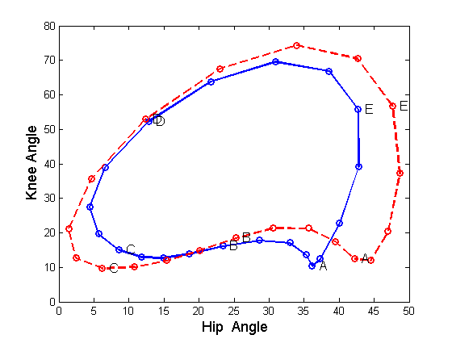
Principal components analysis before registration
This analysis displays the principal modes of joint variation in hip and knee angle. We will want to compare these results, where both amplitude and phase variation are mixed together, with the same results after registration, when the phase variation will be removed.
% Define the functional parameter object for the eigenfunctions. % Their harmonic acceleration is lightly penalized. lambda = 1e-9; gaitfdPar = fdPar(gaitbasis, harmaccelLfd, lambda); % Carry out the principal components analysis, computing four harmonics nharm = 4; gaitpcastr = pca_fd(gaitfd, nharm, gaitfdPar); % Plot harmonics before rotation (not carried out because this requires % interactivity% % plot_pca(gaitpcastr); disp(['Total proportion of variation accounted for = ', ... num2str(sum(gaitpcastr.varprop))])
Total proportion of variation accounted for = 0.87702
Carry out a VARIMAX rotation. These rotated harmonics are usually easier to interpret.
gaitpcastr = varmx_pca(gaitpcastr); % Ordinarily we would plot the harmonics using the interactive function % plot_pca, but instead we call special function gait_pca_plot once % for each harmonic. % plot_pca(gaitpcastr);
Plot Harmonic I
gait_pca_plot(gaitpcastr, gaitmeanfd, 1)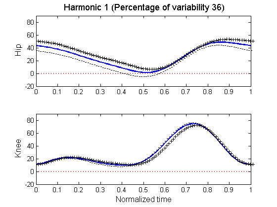
Plot Harmonic II
gait_pca_plot(gaitpcastr, gaitmeanfd, 2)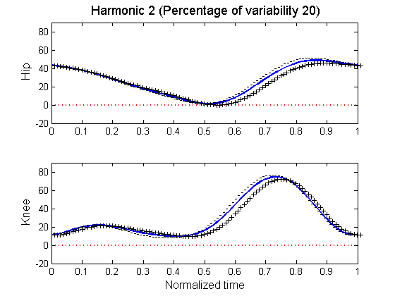
Plot Harmonic III
gait_pca_plot(gaitpcastr, gaitmeanfd, 3)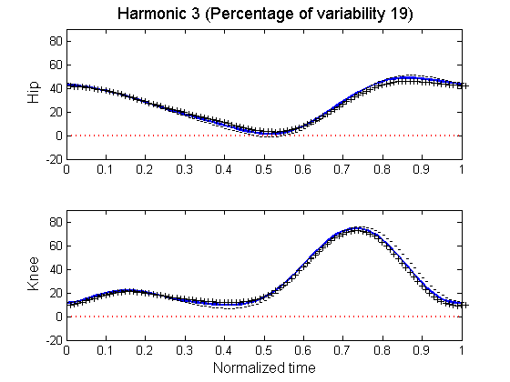
Plot Harmonic IV
gait_pca_plot(gaitpcastr, gaitmeanfd, 4)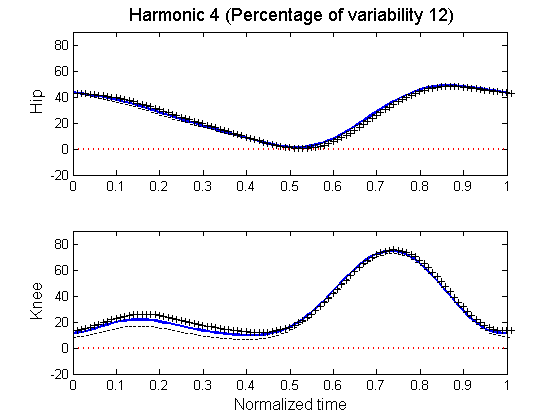
The first rotated harmonic concentrates the hip variation on the first half and last quarter of the cycle. The second harmonic is phase variation over the second half of the cycle. The third harmonic is amplitude variation in the last quarter of the hip cycle and phase variation in the knee cycle at the same time. The fourth harmonic is pure amplitude variation in the first half of the knee cycle.
The following code gives four cycle plots, one for each rotated harmonic. Harmonics are plotted as perturbations of the mean cycle, indicated by small line pointing in the direction of the perturbation. Phase variation, such as seen in the first and second harmonics, shows up as lines pointing along the mean cycle's path.
gaitharmfd = gaitpcastr.harmfd; gaitharmmat = eval_fd(gaittime, gaitharmfd); gaitvarprop = gaitpcastr.varprop; gaitmeanvec = squeeze(eval_fd(gaittime, gaitmeanfd)); subplot(1,1,1) con = 5.*ones(1,4); for j=1:4 subplot(2,2,j) yplus = gaitmeanvec + con(j).*squeeze(gaitharmmat(:,j,:)); % plot the mean cycle points as red circles phdl = plot(gaitmeanvec(:,1), gaitmeanvec(:,2), 'ro'); set(phdl, 'LineWidth', 1) hold on for i=1:20 phdl = plot([gaitmeanvec(i,1), yplus(i,1)], ... [gaitmeanvec(i,2), yplus(i,2)], 'b-'); set(phdl, 'LineWidth', 1) end hold off xlabel('Hip Angle') ylabel('Knee Angle') percentj = num2str(round(gaitvarprop(j)*1000)/10); title(['\fontsize{12} PC ', num2str(j), ' (', percentj, '%)']) axis([-20,60,0,80]) end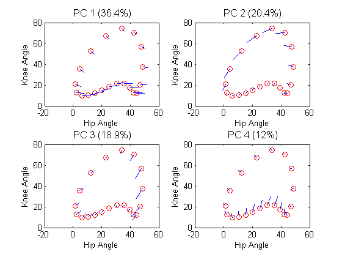
Registration of the curves
The principal component results suggest that the phase variation is important in these curves, and that it may vary somewhat independently for the first half and the second half of the cycle. Here we use continuous variation, and, since the curves are periodic, we allow for a shift in the cycle as well as a nonlinear warping of cycle time.
% Set up basis for warping function. nwbasis = 21; wbasis = create_fourier_basis([0,1],nwbasis); % Set parameters for registerfd periodic = 1; % data are periodic criterion = 2; % minimum eigenvalue of cross-product criterion conv = 1e-4; % convergence criterion iterlim = 20; % max. no. iterations dbglev = 0; % no output for each iteration lambda = 1e-4; Wfd = wbasis; % Don't use this if repeating a prevous registration WfdPar = fdPar(Wfd, harmaccelLfd, lambda); % Carry out the registration [gaitregfd, Wfd, shift] = ... registerfd(gaitmeanfd, gaitfd, WfdPar, periodic, criterion, ... conv, iterlim, dbglev); % Plot, for each variable, the unregistered curves in the top panel % and the registered curves in the bottom. % Hip subplot(2,1,1) % plot(Dgaitfd(:,1)) plot(gaitfd(:,1)) title('\fontsize{13} Unregistered hip angle'); subplot(2,1,2) % plot(Dgaitregfd(:,1)) plot(gaitregfd(:,1)) title('\fontsize{13} Registered hip angle derivative'); % Knee subplot(2,1,1) % plot(Dgaitfd(:,2)) plot(gaitfd(:,2)) title('\fontsize{13} Unregistered knee angle derivative'); subplot(2,1,2) % plot(Dgaitregfd(:,2)) plot(gaitregfd(:,2)) title('\fontsize{13} Registered knee angle'); % Partition of variance into amplitude and phase for hip angle derivative [MS_amp_hip, MS_pha_hip, RSQR_hip, C_hip] = ... AmpPhaseDecomp(gaitfd(:,1), gaitregfd(:,1), Wfd); disp(['Squared multiple correlation for hip derivative = ', ... num2str(RSQR_hip)]) [MS_amp_knee, MS_pha_knee, RSQR_knee, C_knee] = ... AmpPhaseDecomp(gaitfd(:,2), gaitregfd(:,2), Wfd); disp(['Squared multiple correlation for knee derivative = ', ... num2str(RSQR_knee)])
Squared multiple correlation for hip derivative = 0.43962 Squared multiple correlation for knee derivative = 0.60507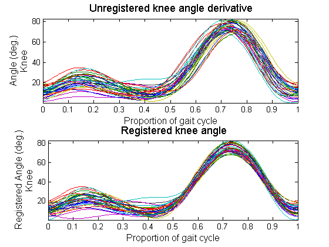
These multiple correlations confirm what we see in the plots; namely that the knee angles are more highly registered than the hip angles. This is due to the nearly constant hip derivative over the first half of the cycle.
% Compute warping function values warpmat = eval_mon(gaitfinetime, Wfd); warpmat = ofine*shift' + warpmat./(ofine*warpmat(nfine,:)); % Plot the warping functions. Note that they will not go through % points (0,0) and (1,1) because of the constant shift. subplot(1,1,1) plot(gaitfinetime, warpmat) xlabel('\fontsize{13} Clock time') ylabel('\fontsize{13} Gait time') % Plot the deformation functions deformmat = warpmat - gaitfinetime*ones(1,39); subplot(1,1,1) plot(gaitfinetime, deformmat, '-', [0,1], [0,0], 'r:') xlabel('\fontsize{13} Clock time') ylabel('\fontsize{13} Gait time - clock time') % Compare the mean function before and after registration gaitmeanregfd = mean(gaitregfd); plot(gaitmeanregfd(:,1)); lhdl = line(gaitmeanfd(:,1)); set(lhdl, 'LineStyle', '--') plot(gaitmeanregfd(:,2)); lhdl = line(gaitmeanfd(:,2)); set(lhdl, 'LineStyle', '--')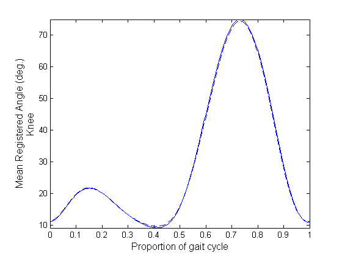
We see that registration had rather little impact on the mean function.
Post-registration principal components analysis of amplitude variation
We saw some sign of phase variation in previous principal components analysis, and required four harmonics to account for 88% of the mixed variation. Now that phase variation has been removed, what changes?
% Carry out the principal components analysis, computing four harmonics
nharm = 4;
gaitregpcastr = pca_fd(gaitregfd, nharm, gaitfdPar);
We see that four harmonics now account for 95% of the total variation.
gaitregpcastr = varmx_pca(gaitregpcastr); % Ordinarily we would plot the harmonics using the interactive function % plot_pca, but instead we call special function gait_pca_plot once % for each harmonic. % plot_pca(gaitpcastr);
Plot harmonic I
gait_pca_plot(gaitregpcastr, gaitmeanregfd, 1)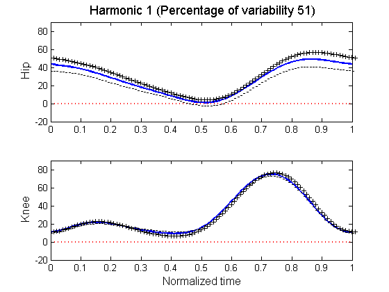
Plot harmonic II
gait_pca_plot(gaitregpcastr, gaitmeanregfd, 2)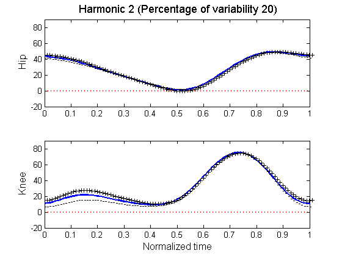
Plot harmonic III
gait_pca_plot(gaitregpcastr, gaitmeanregfd, 3)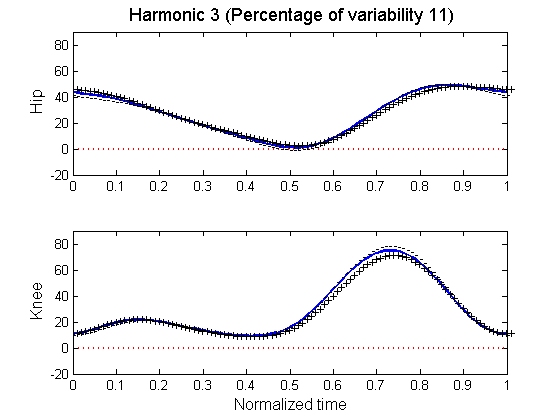
Plot harmonic IV
gait_pca_plot(gaitregpcastr, gaitmeanregfd, 4)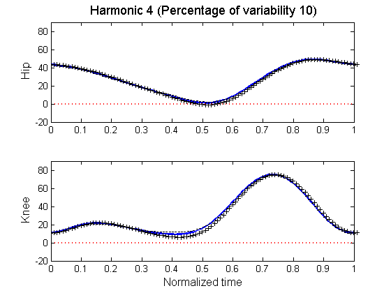
The rotated components have this story to tell: * The first rotated harmonic concentrates the hip variation on the first half and last quarter of the hip cycle. (36%) * The second harmonic is amplitude variation over the third phase that is of the same magnitude and sign for both hip and knee. (20%) * The third harmonic is positive amplitude variation in the second phase for both angles combined with negative amplitude in the final phase. The range of angles are less for both angles. (19%) * The fourth harmonic is positive variation in the first phase only for the knee angle. (12%)
gaitharmscores = gaitregpcastr.harmscr; m = 0; for i=1:3 for j=i+1:4 m = m + 1; subplot(2,3,m) plot(gaitharmscores(:,i), gaitharmscores(:,j), 'o') title([num2str(j),' versus ',num2str(i)]) end end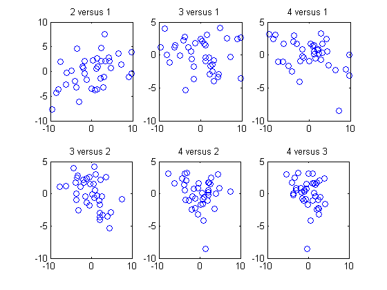
Following code gives four cycle plots, one for each rotated harmonic. Harmonics are plotted as perturbations of the mean cycle, indicated by small line pointing in the direction of the perturbation. Phase variation, such as seen in the first and second harmonics, shows up as lines pointing along the mean cycle's path.
gaitregharmfd = gaitregpcastr.harmfd; gaitregharmmat = eval_fd(gaittime, gaitregharmfd); gaitregvarprop = gaitregpcastr.varprop; gaitmeanregvec = squeeze(eval_fd(gaittime, gaitmeanregfd)); con = 5.*ones(1,4); for j=1:4 subplot(2,2,j) yplus = gaitmeanregvec + con(j).*squeeze(gaitregharmmat(:,j,:)); % plot the mean cycle points as red circles phdl = plot(gaitmeanregvec(:,1), gaitmeanregvec(:,2), 'ro'); set(phdl, 'LineWidth', 1) hold on for i=1:20 phdl = plot([gaitmeanregvec(i,1), yplus(i,1)], ... [gaitmeanregvec(i,2), yplus(i,2)], 'b-'); set(phdl, 'LineWidth', 1) end hold off xlabel('Hip Angle') ylabel('Knee Angle') percentj = num2str(round(gaitregvarprop(j)*1000)/10); title(['\fontsize{12} PC ', num2str(j), ' (', percentj, '%)']) axis([-20,60,0,80]) end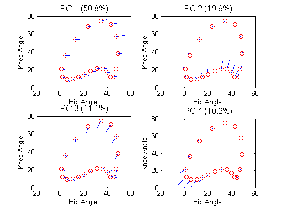
Post-registration principal components analysis of phase variation
Now that we have separated phase variation from amplitude variation, we now, effectively, hav bivariate functional observations for each boy. In preparation for exploring the covariation and other linkages between phase and amplitude variation, we also do a principal components analysis of the phase variation, using the deformation functions since their relatively unconstrained behavior is more suitable for PCA.
% Convert the deformation function values to a functional data object. deformfd = smooth_basis(gaitfinetime, deformmat, gaitbasis); % Carry out the principal components analysis, computing two harmonics nharm = 2; deformpcastr = pca_fd(deformfd, nharm, gaitfdPar); deformpcastr = varmx_pca(deformpcastr); % plot_pca(deformpcastr) deformharmfd = deformpcastr.harmfd; % plot the first harmonic for deformations subplot(2,1,1) plot(deformharmfd(1)); title('\fontsize{13} Deformation harmonic I') % plot the second harmonic for deformations subplot(2,1,2) plot(deformharmfd(2)); title('\fontsize{13} Deformation harmonic II')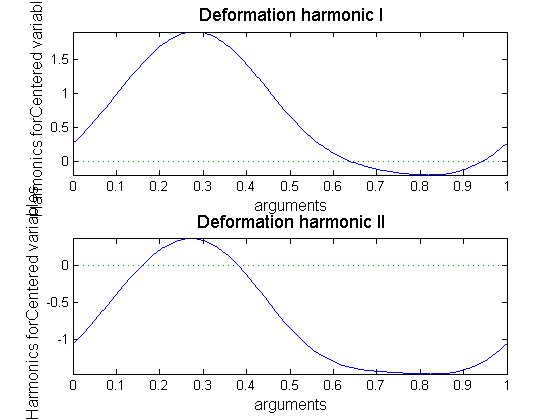
Two components account for 92% of the variation, and after VARIMAX rotation the first component (69%) is centered on phase 2 of the gait cycle, and the second component (13%) extends over phases 3, 4 and 1. It would appear the most of the phase variation has to do with when in the gait cycle the toe leaves the ground. A positive score on the first component corresponds to a late toe lift.
% Plot the principal component scores. deformscores = deformpcastr.harmscr; subplot(1,1,1) phdl = plot(deformscores(:,1), deformscores(:,2), 'o', ... [-0.08,0.08], [0,0], 'r:', [0,0], [-0.03,0.03], 'r:'); set(phdl, 'LineWidth', 2) xlabel('\fontsize{13} Harmonic score I') ylabel('\fontsize{13} Harmonic score II') axis([-0.08,0.08,-0.03,0.03])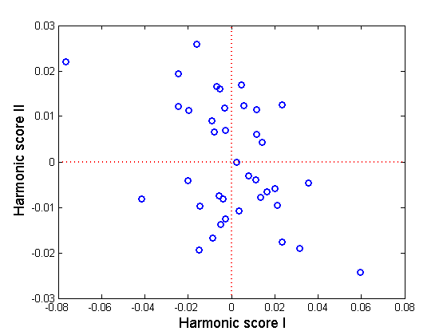
We see two boys with markedly early lifts, and one boy with a substantially late lift. There is a tendency for two clusters along the second principal component axis.
for i=1:4 subplot(2,2,i) plot(gaitharmscores(:,i), deformscores(:,1), 'o') end for i=1:4 subplot(2,2,i) plot(gaitharmscores(:,i), deformscores(:,2), 'o') end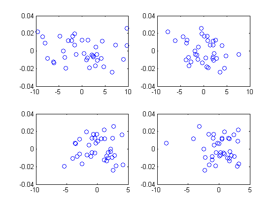
Phase-plane plots for registered mean
We need to examine the behavior of first two derivatives of gait angles, and the phase-plane plot allows us to see the joint variation in these two derivatives, and is often revealing.
% Compute the two derivatives and their values Dgaitmeanregfd = deriv(gaitmeanregfd, 1); D2gaitmeanregfd = deriv(gaitmeanregfd, 2); Dhipvec = eval_fd(gaitfinetime, Dgaitmeanregfd(:,1)); Dkneevec = eval_fd(gaitfinetime, Dgaitmeanregfd(:,2)); D2hipvec = eval_fd(gaitfinetime, D2gaitmeanregfd(:,1)); D2kneevec = eval_fd(gaitfinetime, D2gaitmeanregfd(:,2)); index = 1:5:91; % indices of times of observation % Hip phase-plane plot subplot(1,2,1) phdl = plot(Dhipvec, D2hipvec, '-', ... Dhipvec(index), D2hipvec(index), 'ro', ... Dhipvec(1), D2hipvec(1), 'bo', ... [-150,250], [0,0], 'r:', [0,0], [-2000,2000], 'r:'); set(phdl, 'LineWidth', 2) axis('square') title('\fontsize{13} Hip') xlabel('\fontsize{13} Velocity') ylabel('\fontsize{13} Acceleration') % Knee phase-plane plot subplot(1,2,2) phdl = plot(Dkneevec, D2kneevec, '-', ... Dkneevec(index), D2kneevec(index), 'ro', ... Dkneevec(1), D2kneevec(1), 'bo', ... [-400, 400], [0,0], 'r:', [0,0], [-5000,5000], 'r:'); set(phdl, 'LineWidth', 2) title('\fontsize{13} Knee') axis('square') xlabel('\fontsize{13} Velocity') ylabel('\fontsize{13} Acceleration')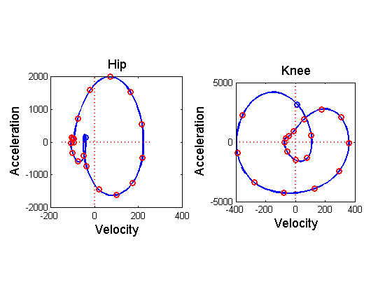
The first time of observation is shown as a blue circle, and one along a phase-plane trajectory in a clockwise manner.
The plot shows two sharp cusps, both with near zero acceleration. Zero acceleration applies constant velocity, and indicates that forces acting on the hip at relatively neutralized at that point. The first cusp is close to the initial heel strike. Counting times, the second cusp comes at 37.5% or 3/8 of the gait cycle, about at the mid point of the second phase, when the leg is carrying the body's weight alone and leg is fully extended. The fact that a number of time points coalesce at this time indicates that this is an interval of stationarity, rather than a point, and corresponds roughly to the second phase. After this point, the hip angle undergoes a large nearly harmonic swing in its values, with the large diameter of this swing indicating a great deal of energy.
In spite of what we see in the plot of hip angles themselves, the hip is undergoing a three-phase process, while the knee is a two-phase process. This suggests that a good deal of the coordination and power in gait comes from hip articulation.
The knee phase-plane plot also shows a relatively stationary period corresponding to the second cusp in the hip cycle.
Display the variance and covariance functions
This is a preliminary to a canonical correlation analysis that will look more closely at the structure of the covariation
gaitvarbifd = var(gaitfd); gaitvararray = eval_bifd(gaitvarbifd, gaittime, gaittime); subplot(2,3,1) contour(gaitvararray(:,:,1,1)) title('Knee - Knee') subplot(2,3,2) contour(gaitvararray(:,:,1,2)) title('Knee - Hip') subplot(2,3,3) contour(gaitvararray(:,:,1,3)) title('Hip - Hip') subplot(2,3,4) surf(gaitvararray(:,:,1,1)) title('Knee - Knee') subplot(2,3,5) surf(gaitvararray(:,:,1,2)) title('Knee - Hip') subplot(2,3,6) surf(gaitvararray(:,:,1,3)) title('Hip - Hip')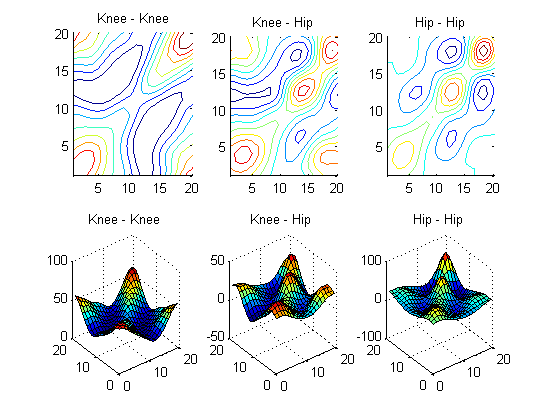
Canonical correlation of hip and knee angle
Clearly the hip and knee angles are correlated across children, but we need to know:
- how strong the correlation is
- how many modes of correlation there are
- where in the gait cycles the coupling between the two variable is strong
% penalize the harmonic acceleration lambda = 1e-6; gaitfdPar = fdPar(gaitfd, harmaccelLfd, lambda); % carry out the canonical correlation, keeping two modes of covariation ncan = 2; gaitccastr = cca_fd(gaitfd(:,1), gaitfd(:,2), ncan, ... gaitfdPar, gaitfdPar); % plot the two pairs of canonical weight functions gaitfinetime = linspace(0,1,101)'; subplot(2,1,1) wtfdxvec = eval_fd(gaitfinetime, gaitccastr.wtfdx); phdl=plot(gaitfinetime, wtfdxvec(:,1), '-', ... gaitfinetime, wtfdxvec(:,2), 'r-'); set(phdl, 'LineWidth', 2) xlabel('') ylabel('\fontsize{13} Hip weight') legend('\fontsize{13} First', '\fontsize{13} Second', ... 'Location', 'NorthWest') subplot(2,1,2) wtfdyvec = eval_fd(gaitfinetime, gaitccastr.wtfdy); phdl=plot(gaitfinetime, wtfdyvec(:,1), '-', ... gaitfinetime, wtfdyvec(:,2), 'r-'); set(phdl, 'LineWidth', 2) xlabel('\fontsize{13} Normalized time') ylabel('\fontsize{13} Knee weight') % display the first five canonical correlations disp('First five canonical correlations:') disp(gaitccastr.corrs(1:5))
First five canonical correlations:
0.8964
0.8059
0.3923
0.2565
0.1612
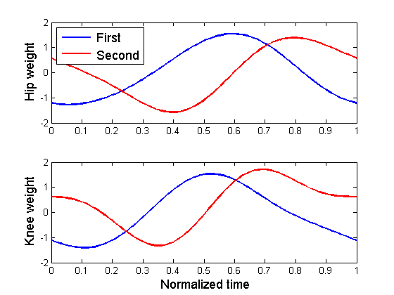 Plot the canonical variable scores. The gait cycle for each child is plotted in the location defined by the canonical variable scores.
gaitccahipscores = gaitccastr.varx; gaitccakneescores = gaitccastr.vary; gaitmat = eval_fd(gaitfinetime, gaitfd);
The first canonical variable scores
subplot(1,1,1) hold on for i=1:39 phdl=plot(gaitccahipscores(i,1) +gaitmat(:,i,1)/50, ... gaitccakneescores(i,1)+gaitmat(:,i,2)/50, '-'); set(phdl, 'LineWidth', 1) end hold off axis('square') xlabel('\fontsize{13} Hip angle') ylabel('\fontsize{13} Knee angle')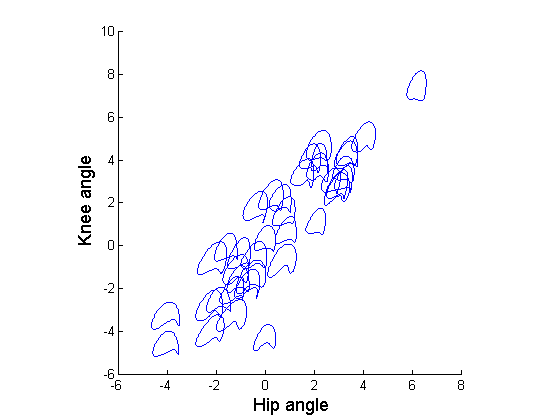
The second canonical variable scores
subplot(1,1,1) hold on for i=1:39 phdl=plot(gaitccahipscores(i,2) +gaitmat(:,i,1)/50, ... gaitccakneescores(i,2)+gaitmat(:,i,2)/50, '-'); set(phdl, 'LineWidth', 1) end hold off axis([-6,9,-6,9]) xlabel('\fontsize{13} Hip angle') ylabel('\fontsize{13} Knee angle')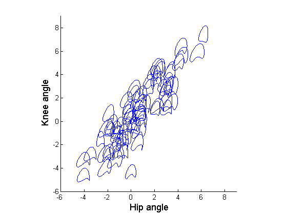